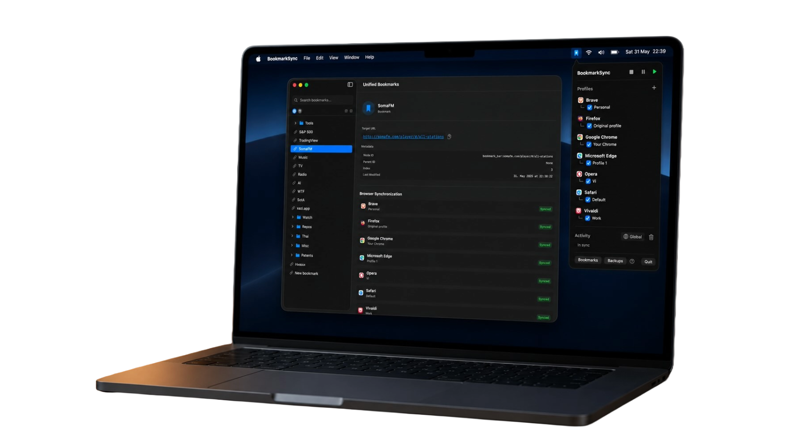
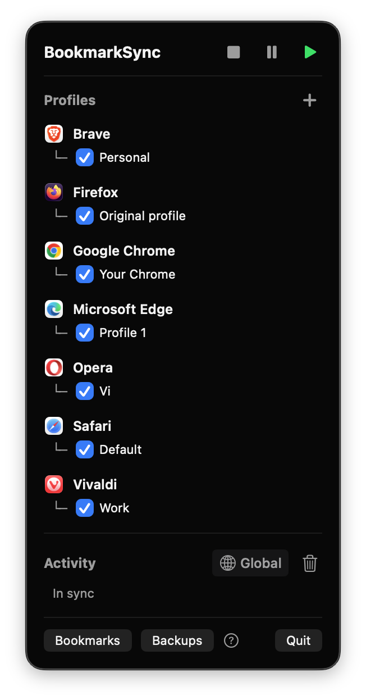
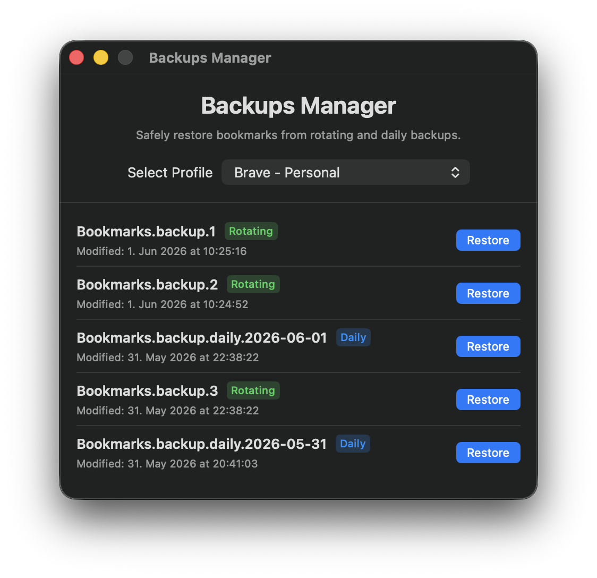
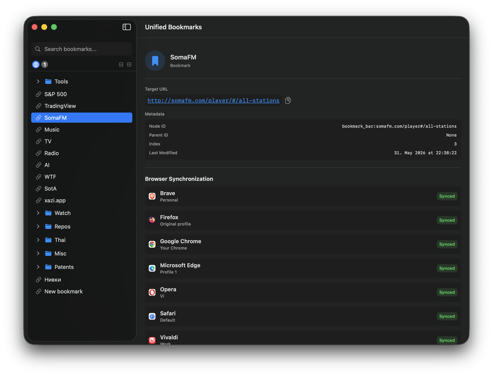

Unify Your Bookmarks.
No extensions,
no cloud.
Seamlessly sync bookmarks across Safari, Chrome, Firefox and others
directly from your menu bar.
Private, local, easy.

Built for Power Users
100% Local & Private
No cloud accounts needed. Your bookmarks stay on your Mac. Edits directly write to native browser storage files.
Reactive File Watching
Updates instantly when browser changes. Optimized FSEvents wrapper ensures zero CPU overhead.
Smart Conflict Resolution
Advanced hierarchical merging. Robust URL normalization and folder syncing ensures you never lose a link.
Native macOS Experience
Resides discreetly in your menu bar. Built with Swift, perfectly hidden from the Dock, minimal footprint.
Native UIs

Menu Bar Control
Access your profiles instantly from the macOS menu bar.

Robust Backups
Restore previous states with daily and rotating snapshot backups.

Unified Bookmarks
Search and view sync status across all your browsers.